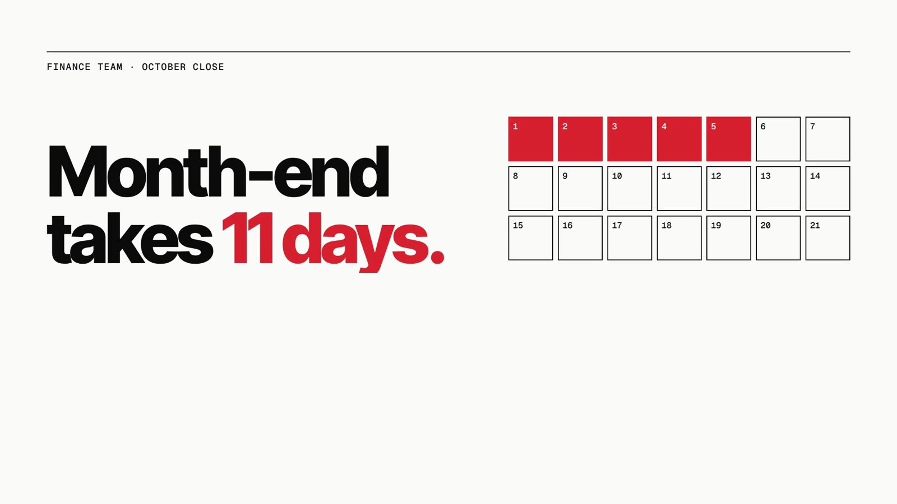
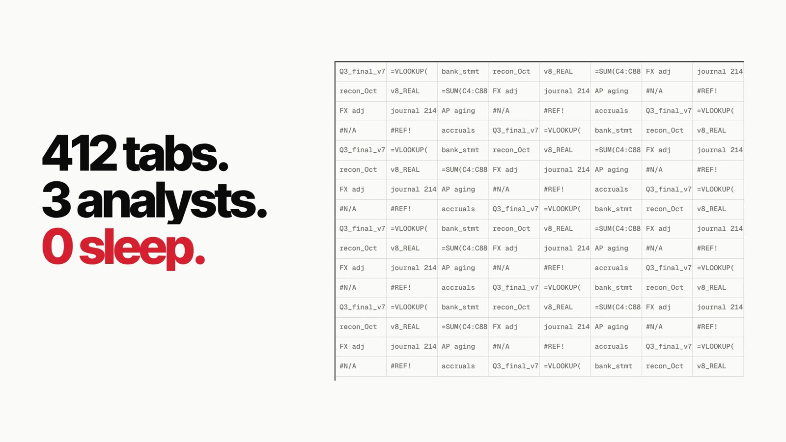
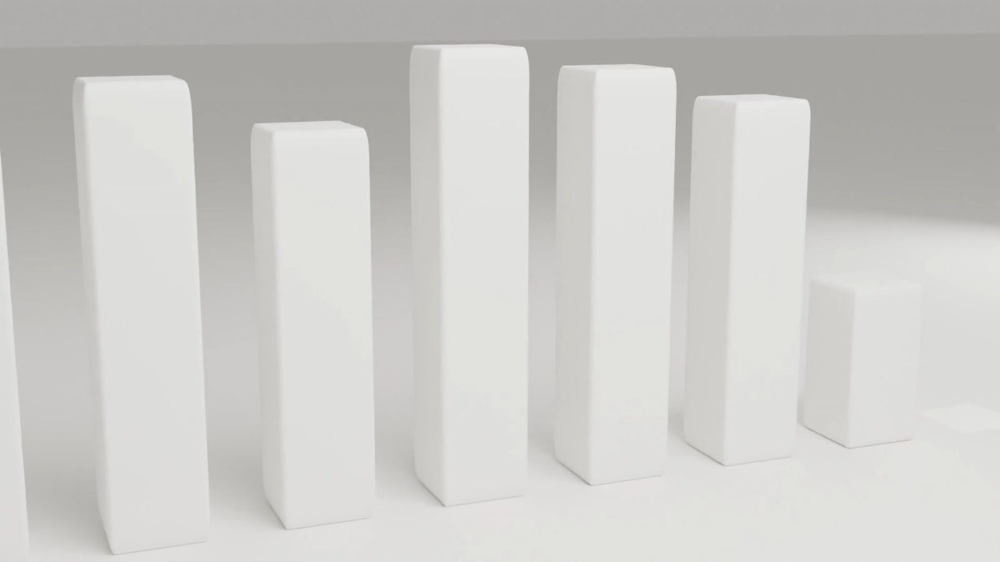
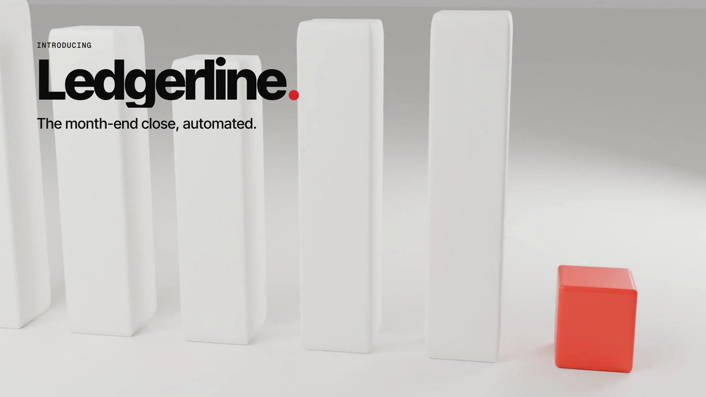
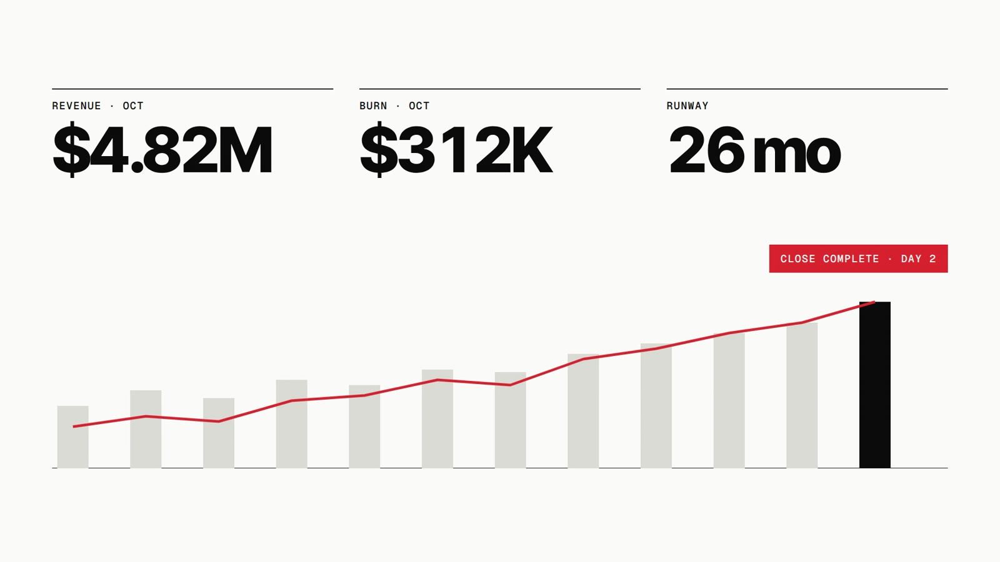
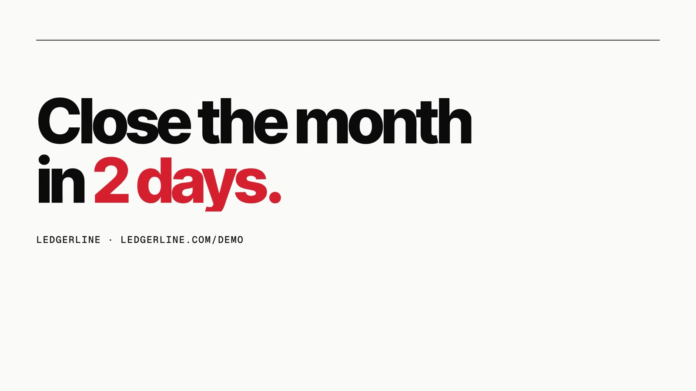

Ledgerline
A finance-automation platform that closes the books in two days. Swiss-grid typography, one red accent, and a path-traced 3D hero shot.
Ledgerline is a fictional brand. We wrote the brief ourselves and built the film to the same standard and process as client work. All people, stats and quotes in it are invented.
The brief
Finance software is usually sold with stock photos of handshakes and a dashboard screenshot. CFOs respond to numbers, not mood. The film had to earn attention in the first two seconds with a pain every controller knows.
The idea
Open on the calendar: month-end takes 11 days, and we watch the days fill red. Then the chaos of 412 spreadsheet tabs turning red at once. The reveal is a single physical object: twelve ceramic bars, one per month, where the last one is short and red. Day 2. Then the proof, in KPIs that count up.






How it's made
The hero shot is real 3D, modelled and path-traced in Blender Cycles with bevelled ceramic materials, soft area lights and shallow depth of field, then composited under live HTML typography. Everything else is a strict Swiss grid: heavy Inter Tight, mono labels, and red used only where time is lost or won.
Type: Inter Tight · Geist Mono
Credits
Concept, script, art direction, animation, sound design and edit: NexusPulse Studio.